Simulink 기초 — 블록으로 모델을 만들고 제어기를 붙인다
- 전달함수를 곱하고
feedback으로 닫는 것과, 블록을 선으로 잇는 것은 무엇이 다른가? - 빈 모델에서 시작해 「계단 입력 → 플랜트 → 그래프」를 만들려면 어떤 버튼을 어떤 순서로 누르나?
- Scope에 나온 곡선의 최종값은 전달함수의 어느 값과 같아야 하나?
- 같은 플랜트에 P · PD · PID 제어기를 차례로 끼우면 응답이 어떻게 달라지나?
지금까지 시스템은 전부 식으로 다뤘다. tf로 전달함수를 만들고, *로 곱하고,
feedback으로 루프를 닫은 뒤 step으로 응답을 그렸다.
7회 마지막에는 이미 만들어진 Simulink 모델을 코드로 열어 같은 결과가 나오는지 확인하기도 했다.
오늘은 그 Simulink 모델을 빈 화면에서부터 직접 만든다. 3부(9~11회)는 Simulink와 그 위에서 도는 물리 모델링 도구 Simscape를 다룬다. 오늘은 마우스로 블록을 놓고 잇는 기본 사용법을 익히고, 7회에서 다룬 플랜트 \(G(s) = \dfrac{1}{(s+3)(s+5)(s+10)}\)에 제어기를 바꿔 끼우며 응답이 어떻게 달라지는지 눈으로 본다.
화면 그림의 12 같은 빨간 번호는 본문의 같은 번호와 짝을 이룬다. 그림만 보고 따라 눌러도 되도록 번호 순서가 곧 누르는 순서가 되게 붙였다.
한 장 요약
왼쪽은 오늘 쓰는 블록과 화면, 오른쪽은 그것이 제어공학의 어느 자리인지다.
| 블록 · 기능 | 하는 일 | 제어공학에서 쓰는 자리 |
|---|---|---|
| Step (Sources) | 정해진 시각에 값이 한 번 뛰는 신호 | 계단 입력 \(r(t)\) |
| Transfer Fcn (Continuous) | 분자·분모 계수로 전달함수를 적는다 | 플랜트 \(G(s)\) |
| Scope (Sinks) | 신호를 시간 그래프로 보여 준다 | 응답 \(y(t)\) 확인 |
| Sum · Gain (Math Operations) | 더하고 빼기 · 상수 곱하기 | 오차 \(e = r - y\), 비례 제어 \(K e\) |
| PID Controller (Continuous) | \(K_p + K_i/s + K_d s\)를 한 블록에 | 제어기 \(C(s)\) |
| Library Browser · 빠른 삽입 | 블록을 찾아 캔버스에 놓는다 | 블록 선도 그리기 |
| Stop Time · Run · Model Settings | 시뮬레이션 시간과 계산 방법을 정하고 돌린다 | 미분방정식 풀기 |
| Log Signals · Data Inspector | 신호를 기록하고, 여러 번 돌린 결과를 겹쳐 본다 | 제어기 비교 |
out = sim(model) · out.logsout | 코드로 돌리고 기록된 신호를 꺼낸다 (7회) | 파라미터를 바꿔 가며 반복 |
① Simulink는 무엇인가
식으로도 응답을 다 그릴 수 있는데 블록 선도 도구가 따로 왜 필요할까?
전달함수로 충분하다는 생각이 들 수 있다. 실제로 지금까지의 문제는 전부 tf와 feedback으로 풀렸다.
그런데 실제 장치에는 전달함수로 적기 어려운 것이 붙어 있는 경우가 많다. 모터 드라이버는 12 V 이상을 낼 수 없고(포화), 센서는 잡음을 섞고, 부하는 어느 순간 갑자기 걸린다(외란). 이런 것은 \(G(s)\)의 분자·분모에 들어가지 않는다. Simulink는 시스템을 블록과 선으로 그린 뒤, 시간을 조금씩 앞으로 밀면서 각 블록의 식을 차례로 계산한다. 그래서 선형이 아닌 블록도 그 자리에 끼워 넣기만 하면 된다.
| MATLAB 코드 (4~7회) | Simulink (오늘) | |
|---|---|---|
| 시스템을 적는 법 | G = tf(1, den), T = feedback(K*G, 1) | Transfer Fcn · Gain · Sum 블록을 선으로 잇는다 |
| 응답을 구하는 법 | step(T) — 폐루프 전달함수를 한 번에 푼다 | Run — 시간을 앞으로 밀며 블록마다 계산한다 |
| 넣기 쉬운 것 | 선형 시스템 · 극점과 영점 · 근궤적 · 보드 선도 | 포화 · 외란 · 스위치 · 물리 부품(10회) |
| 결과를 보는 곳 | 그림 창(figure) | Scope · Data Inspector |
두 방법은 경쟁하지 않는다. 보통은 MATLAB 코드로 설계하고(근궤적·보드 선도), Simulink로 검증한다. 전달함수 계산이 맞는지 블록 선도로 한 번 더 돌려 보고, 그다음 포화 같은 것을 얹어 실제에 가까운 조건에서 버티는지 본다. 오늘은 그 앞부분까지 간다. 포화를 얹는 것은 11회 모터에서 해 본다.
② 시작 화면과 모델 편집기
Simulink는 어디서 여나? MATLAB 명령 창에 simulink를 치거나, HOME 탭의 Simulink 버튼(1회 그림)을 누른다. 그러면 시작 화면이 뜬다.

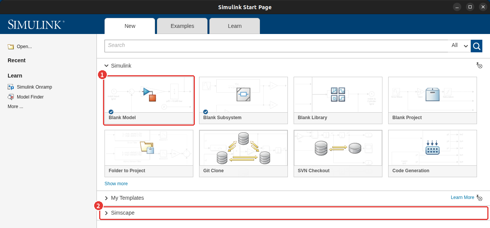
- 1Blank Model을 누르면 빈 모델 편집기가 열린다. 이름은
untitled이고, 저장(Ctrl+S)할 때 이름을 정한다. 파일 확장자는.slx다. - 2Simscape 줄을 펼치면 물리 모델용 빈 템플릿이 있다. 오늘은 쓰지 않는다.

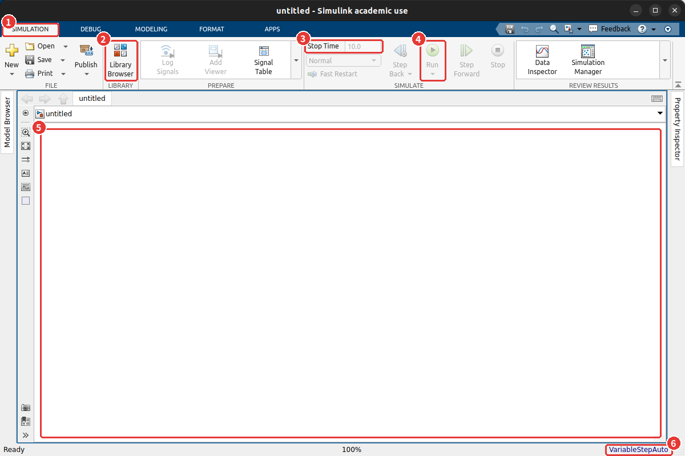
- 1SIMULATION 탭 — 블록 찾기, 시뮬레이션 시간, 실행, 결과 보기가 모여 있다.
- 2Library Browser — 블록 목록을 연다. ③에서 쓴다.
- 3Stop Time — 시뮬레이션을 몇 초까지 할지. 기본값은 10초다.
- 4Run — 시뮬레이션을 돌린다. 블록이 하나도 없으면 흐리게 꺼져 있다.
- 5캔버스 — 블록을 놓고 선을 긋는 곳. 마우스 휠로 확대·축소하고, 빈 곳을 끌어 화면을 옮긴다.
- 6Solver 표시 — 미분방정식을 푸는 방법.
VariableStepAuto는 「계산 간격을 알아서 바꿔 가며 푼다」는 뜻이다. ⑤에서 다시 본다.
③ 블록 놓기 — Library Browser · 빠른 삽입
블록은 어디에 있나? 두 가지 길이 있다. 블록이 어느 분류에 있는지 모를 때는 Library Browser에서 찾고, 이름을 알 때는 캔버스에서 바로 빠른 삽입(Quick Insert)을 쓴다. 손에 익으면 대부분 빠른 삽입을 쓰게 된다.
Library Browser에서 끌어다 놓기

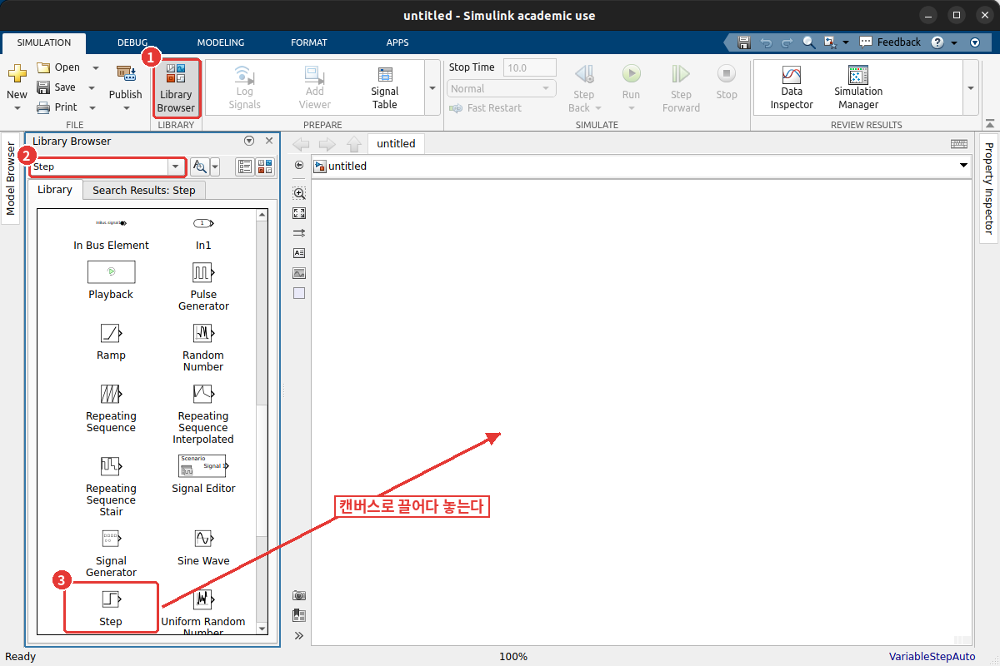
- 1툴스트립의 Library Browser를 누른다.
- 2검색 창에 이름을 쳐도 되고, 아래 목록에서 Simulink › Sources를 펼쳐도 된다.
- 3Step 블록을 캔버스로 끌어다 놓는다. 같은 블록이 하나 더 필요하면 캔버스의 블록을 Ctrl을 누른 채 끌면 복사된다.
빠른 삽입 — 캔버스를 더블클릭하고 이름을 친다

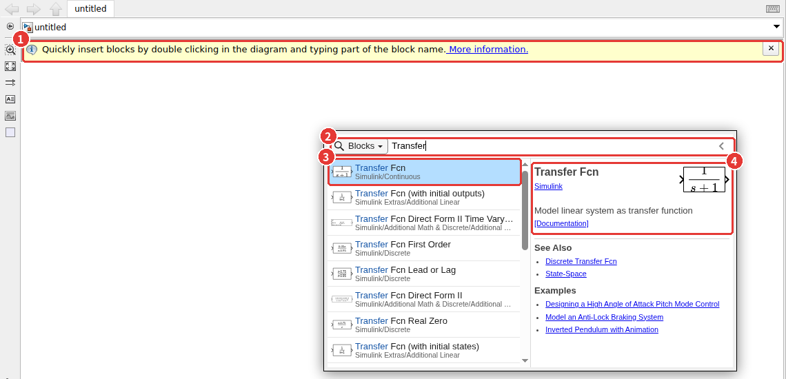
Transfer까지 친 모습. 첫 줄의 Transfer Fcn이 오늘 쓸 블록이다.- 1처음 열면 캔버스 위에 「더블클릭하고 블록 이름의 일부를 치라」는 안내가 뜬다.
- 2캔버스 빈 곳을 더블클릭하면 검색 창이 뜬다. 이름의 앞 몇 글자를 친다.
- 3목록에서 고르고 Enter. 더블클릭한 그 자리에 블록이 놓인다. 회색 글씨(
Simulink/Continuous)는 그 블록이 라이브러리 어디에 있는지다. - 4오른쪽에 블록 설명과 아이콘이 보인다. 이름이 비슷한 블록이 많으니 아이콘과 분류를 보고 고른다.
오늘 쓰는 블록과 위치는 아래와 같다. 이름 그대로 빠른 삽입에 치면 첫 줄에 나온다.
| 블록 | Library Browser 위치 | 모양 |
|---|---|---|
| Step | Simulink › Sources | 계단 모양 |
| Transfer Fcn | Simulink › Continuous | 분수 모양 (\(\tfrac{1}{s+1}\)) |
| Scope | Simulink › Sinks | 모니터 모양 |
| Sum | Simulink › Math Operations | 둥근 모양 또는 사각형, 안에 + − |
| Gain | Simulink › Math Operations | 삼각형 |
| PID Controller | Simulink › Continuous | PID(s) 사각형 |
④ 신호선 잇기와 블록 설정
블록 세 개(Step · Transfer Fcn · Scope)를 놓았으면 이제 잇는다. 선은 어떻게 긋나? 블록 오른쪽의 작은 꺾쇠 ▷(출력 포트)에서 마우스를 누른 채 다음 블록 왼쪽의 ▷(입력 포트)까지 끌어 놓는다. 출력 포트를 클릭한 다음 입력 포트를 클릭해도 되고, 블록 하나를 선택한 채 Ctrl을 누르고 다른 블록을 클릭하면 둘이 바로 이어진다.
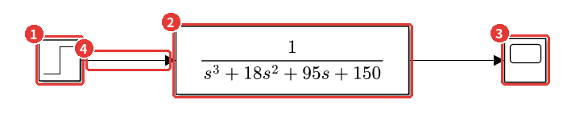
plant_step.slx — 계단 입력을 플랜트에 넣고 출력을 그래프로 본다.- 1Step — 입력 \(r(t)\).
- 2Transfer Fcn — 플랜트 \(G(s)\). 블록 안에 전달함수가 수식으로 그려진다.
- 3Scope — 출력을 그래프로 본다.
- 4신호선 — 화살표 방향이 신호가 흐르는 방향이다. 한쪽 끝이 포트에 닿지 않은 선은 빨간 점선으로 보이고, 그 상태로 Run을 누르면 경고가 뜬다.
블록을 더블클릭하면 설정 창(Block Parameters)이 열린다. Step부터 본다.
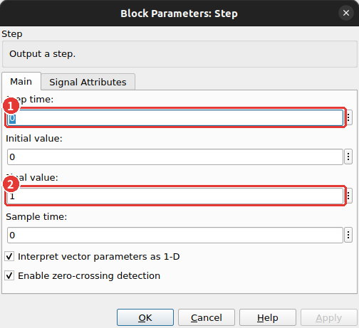
⚠️ Step 블록은 기본으로 1초에 뛴다
Step time의 기본값은 1이다. 그대로 두면 0~1초 동안 입력이 0이라 응답이 1초 늦게 시작한다.
step 함수의 그래프와 겹쳐 보면 1초씩 어긋나서 「계산이 틀렸나?」 하고 헤매게 된다.
교재의 단위계단과 같게 하려면 1 Step time을 0으로 바꾼다.
다음은 Transfer Fcn이다. 분자와 분모를 s의 내림차순 계수 벡터로 적는다 — 2회에서 다항식을 계수 벡터로 다룬 것과 같다.
분모 \((s+3)(s+5)(s+10)\)은 펼쳐서 적어야 하니, 펼친 계수는 MATLAB에서 conv로 구한다.
% (s+3)(s+5)(s+10) 을 펼친 계수 — Transfer Fcn 블록의 Denominator 칸에 넣을 값
den = conv(conv([1 3], [1 5]), [1 10])명령 창 출력
den =
1 18 95 150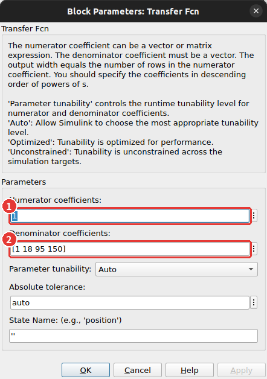
1 2 분모 [1 18 95 150].
칸에는 숫자만이 아니라 MATLAB 식도 적을 수 있다. 분모 칸에 conv(conv([1 3],[1 5]),[1 10])를 그대로 적어도 돌아간다.
다만 그러면 블록 겉면에는 수식 대신 \(1/U(s)\)라고만 보인다. 모델을 볼 때 플랜트가 무엇인지 바로 읽히도록 오늘은 펼친 숫자를 적었다.
⑤ 시뮬레이션 실행과 Scope
이 플랜트의 응답은 몇 초면 다 보일까? 극점 중 가장 느린 것이 −3이니 시정수가 1/3초쯤이다. 3초면 충분하다.
툴스트립의 Stop Time에 3을 적고 Run을 누른 뒤, Scope를 더블클릭하면 그래프 창이 열린다.

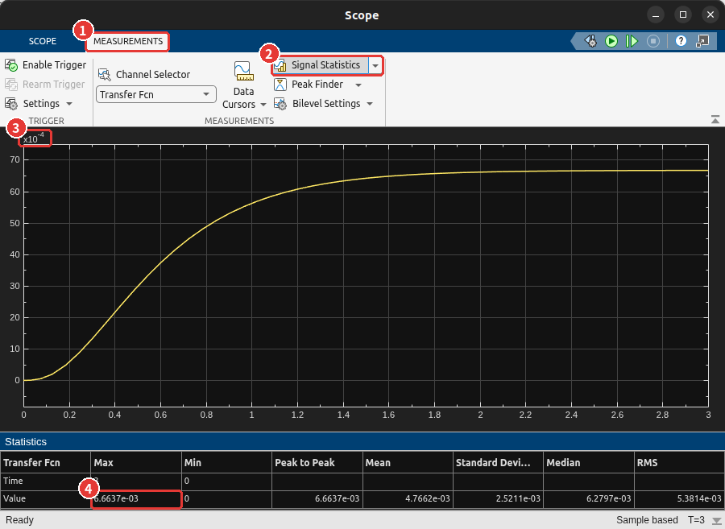
- 1MEASUREMENTS 탭을 누른다. (SCOPE 탭에는 실행 버튼과 그리드·창 설정이 있다.)
- 2Signal Statistics를 켜면 그래프 아래에 통계 표가 붙는다. 곡선 위의 값을 마우스로 읽으려면 옆의 Data Cursors를 쓴다.
- 3세로축 위의 ×10−4를 놓치기 쉽다. 눈금 「66」은 \(66\times10^{-4} = 0.0066\)이다.
- 4Max 6.6637e−03 — 3초에서의 값이자 최댓값이다. 출력은 0.0067 근처에서 멈춘다.
🆕 이 절에서 처음 나오는 것
- Stop Time · Run
- 시뮬레이션할 시간 길이와 실행 버튼. 여기서는 3초 동안 돌렸다. 코드로는 7회의
sim(model)이 Run과 같다. - Scope 창의 MEASUREMENTS 탭
- Data Cursors(곡선 위 값 읽기) · Signal Statistics(최대·최소·평균) · Peak Finder(봉우리 찾기). 여기서는 최종값을 읽는 데 썼다.
📐 이론과 잇기 — 계단응답의 최종값은 \(G(0)\)
단위계단 \(R(s) = 1/s\)를 넣었을 때 최종값 정리로 출력의 최종값을 구하면
$$y(\infty) = \lim_{s\to 0} s\,G(s)\,\frac{1}{s} = G(0) = \frac{1}{(3)(5)(10)} = \frac{1}{150} = 0.00667$$Scope의 Max 6.6637e−03은 3초에서 아직 아주 조금 덜 올라온 값이다. 4회의 dcgain으로 확인한다.
% Scope 에서 읽은 최종값을 MATLAB 으로 확인한다
G = tf(1, den);
fprintf('dcgain(G) = %.5f, 1/150 = %.5f\n', dcgain(G), 1/150)명령 창 출력
dcgain(G) = 0.00667, 1/150 = 0.00667플랜트에 1을 넣었는데 0.0067밖에 나오지 않는다. 입력을 따라가게 하려면 출력을 되먹여 오차를 줄여야 한다. ⑥에서 루프를 닫는다.
최대 스텝 크기 — Model Settings
루프를 닫기 전에 하나 짚어 둔다. ⑥의 P 제어 결과를 Scope로 보면 곡선이 꺾은선처럼 각져 보인다.
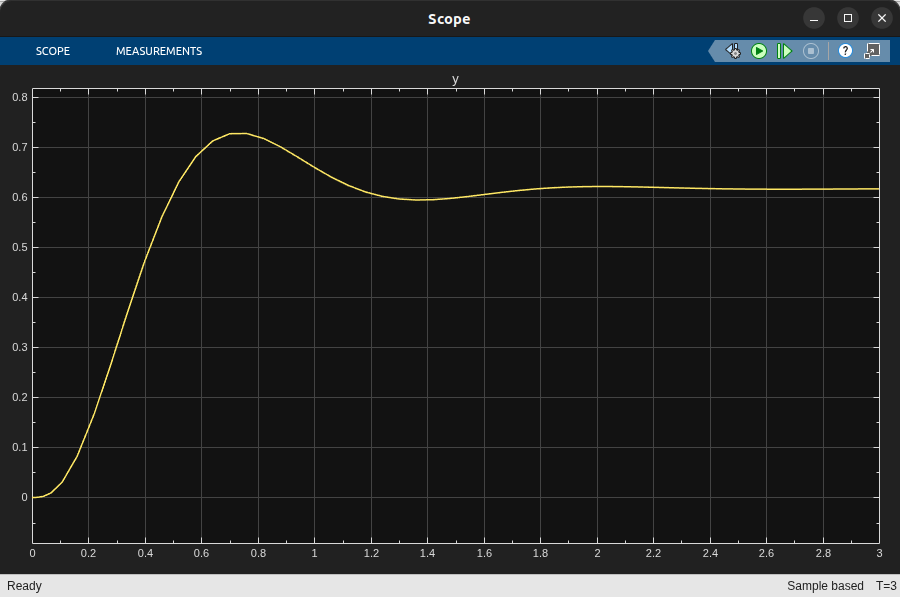
⚠️ 곡선이 각진 것은 계산이 틀려서가 아니다
기본 Solver(VariableStepAuto)는 신호가 완만하면 계산 간격을 크게 벌린다. Scope는 계산한 점만 직선으로 잇기 때문에 간격이 벌어진 곳이 각져 보인다.
점 하나하나는 정확하다. 그래도 봉우리 높이를 읽거나 다른 곡선과 겹쳐 비교하려면 점이 촘촘한 편이 낫다.
아래처럼 최대 스텝 크기를 정해 주면 간격이 그 이상 벌어지지 않는다. 오늘 쓰는 모델은 모두 0.01초로 맞춰 두었다.
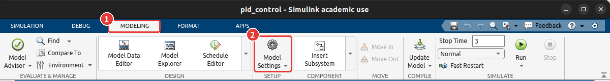
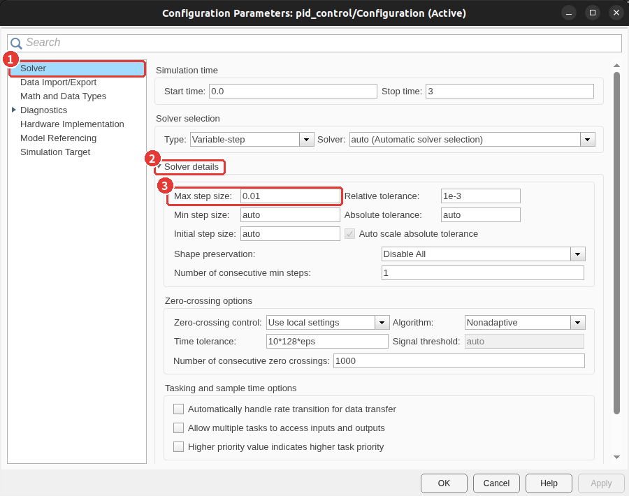
auto에서 0.01로. Stop Time도 이 창 맨 위에서 바꿀 수 있다.⑥ 피드백 루프와 P 제어 — Sum · Gain
출력을 입력 쪽으로 되돌려 「목표 − 출력」을 만들려면 블록 선도에 무엇이 필요할까? 교재의 단위 피드백 그림을 그대로 옮긴다. 빼기를 하는 Sum, 오차에 상수를 곱하는 Gain(비례 제어기), 그리고 출력선에서 갈라져 Sum으로 돌아가는 선 하나다.
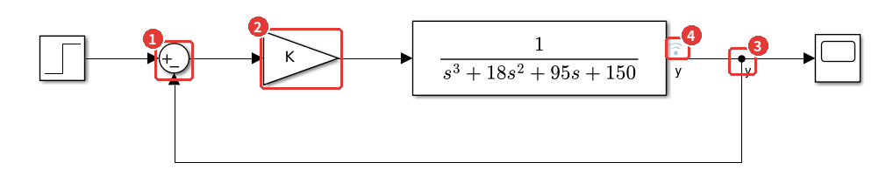
p_control.slx. 교재의 단위 피드백 블록 선도와 같은 모양이다.- 1Sum — 설정 창의 List of signs를
|+-로 바꾼다(아래 그림). 왼쪽 입력이 +, 아래 입력이 −가 된다. - 2Gain — 값 칸에 숫자 대신 변수 이름
K를 적었다. 값은 MATLAB 작업공간에서 읽는다. - 3분기점 — 되먹임 선은 블록에서가 아니라 이미 있는 선 위에서 시작한다. 선 위에서 마우스 오른쪽 버튼을 누른 채 끌거나, Ctrl을 누른 채 왼쪽 버튼으로 끈다. 갈라지는 자리에 검은 점이 찍힌다.
- 4기록 표시(안테나 모양) — 이 신호를 기록한다는 뜻이다. 신호 이름
y는 선을 더블클릭해 적는다. ⑦에서 다시 본다.
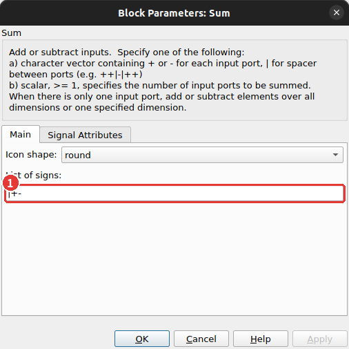
|는 빈자리, + -는 입력 하나씩. 둥근 Sum에서는 위 → 왼쪽 → 아래 순서로 자리가 정해져 |+-는 「위는 비우고, 왼쪽 +, 아래 −」다.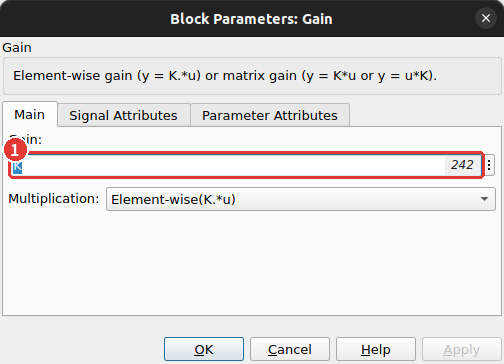
K. 작업공간에 K가 있으면 칸 오른쪽에 그 값(242)이 흐리게 보인다.
K를 정하지 않고 Run을 누르면 「K가 정의되지 않았다」는 오류가 난다. 명령 창에서 K = 242를 먼저 실행하고 돌린다.
242는 7회에서 근궤적이 최대초과 20% 선과 만나는 이득으로 구했던 값이다. 코드로 돌리고 기록된 출력을 꺼내면 아래와 같다.
% Gain 블록이 읽을 변수 K 를 만든 뒤 모델을 시뮬레이션한다
K = 242;
out = sim('p_control');
y = out.logsout.getElement('y').Values; % 기록 표시를 붙인 신호 y
fprintf('t = 3 s 의 출력 %.4f, K/(150+K) = %.4f\n', y.Data(end), K/(150 + K))명령 창 출력
t = 3 s 의 출력 0.6172, K/(150+K) = 0.6173📐 이론과 잇기 — P 제어의 정상상태 오차
폐루프 전달함수 \(T(s) = \dfrac{K G(s)}{1 + K G(s)}\)에서 최종값은 \(T(0)\)이다. \(G(0) = 1/150\)을 넣으면
$$T(0) = \frac{K/150}{1 + K/150} = \frac{K}{150 + K} = \frac{242}{392} = 0.6173$$Scope의 0.62와 같다. 오차 \(1 - 0.617 = 0.383\)이 남는다. 4회에서 본 「0형 시스템의 계단 입력 정상상태 오차 \(1/(1+K_p)\)」 그대로다(\(K_p = K G(0) = 1.61\)).
코드로 K 바꿔 가며 돌리기
K를 키우면 오차가 줄어드니 마냥 키우면 될까? 모델을 마우스로 매번 고치는 대신, 작업공간의 K만 바꿔 가며 sim을 반복한다.
블록이 변수 이름을 읽게 해 둔 덕분에 모델 파일은 손대지 않아도 된다.
% K 를 바꿔 가며 같은 모델을 여러 번 돌린다
Ks = [50 242 1000 1800];
figure; hold on
for K = Ks
out = sim('p_control');
y = out.logsout.getElement('y').Values;
plot(y.Time, y.Data, 'DisplayName', sprintf('K = %d', K))
end
hold off; grid on; legend('Location', 'northwest')
ylim([-0.5 2])
xlabel('시간 (s)'); ylabel('출력 y')
title('P 제어 — 이득 K 에 따른 응답')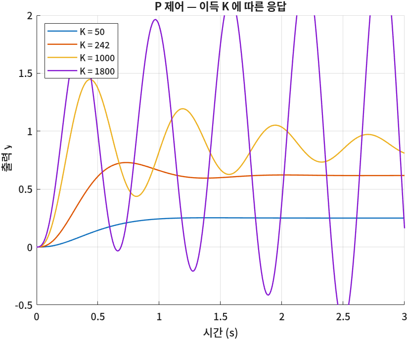
K를 키우는 것만으로는 오차를 없앨 수 없고, 어느 선을 넘으면 시스템이 불안정해진다. 4회의 Routh 판별법으로 그 선을 구하면 특성방정식 \(s^3 + 18s^2 + 95s + (150 + K) = 0\)에서 \(18 \times 95 > 150 + K\), 곧 K < 1560이다. 1800이 발산하는 이유다.
⑦ PID Controller 블록
그럼 오차를 없애면서 빠르게 하려면 무엇을 바꿔야 하나? 7회에서 본 것처럼 제어기에 미분(D)과 적분(I)을 더한다. Gain 블록 자리에 PID Controller 블록을 넣으면 세 이득을 한 블록에서 바꿀 수 있다.
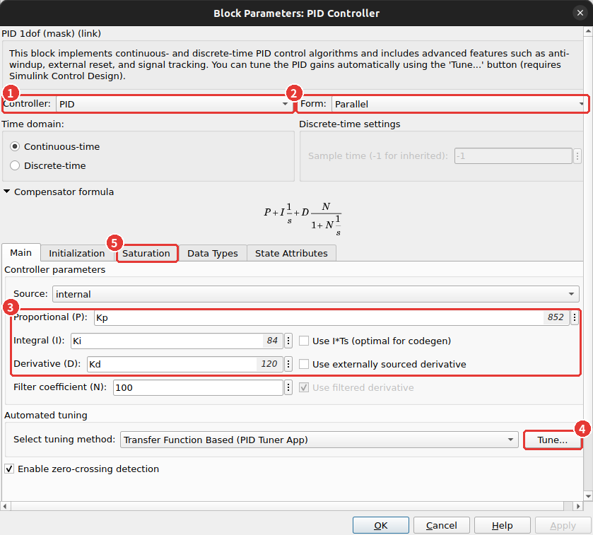
- 1Controller — P · PI · PD · PID 중에서 고른다. 고르지 않은 항의 칸은 사라진다.
- 2Form — Parallel(\(P + I/s + Ds\))로 둔다. Ideal(\(P(1 + I/s + Ds)\))을 고르면 같은 숫자가 다른 제어기가 된다(7회 ⚠️).
- 3P · I · D 칸 — 변수
KpKiKd를 적어 두고 값은 작업공간에서 바꾼다. N은 미분 항에 씌우는 필터로, 기본값 100을 그대로 쓴다. - 4Tune… — PID Tuner 앱을 열어 이득을 자동으로 고른다(조금 더 알아두면).
- 5Saturation 탭 — 제어기 출력에 한계를 둘 수 있다. 11회에서 쓴다.
세 제어기를 차례로 넣어 본다. P는 ⑥의 K = 242, PD는 7회에서 설계한 \(123(s+7) = 861 + 123s\), PID는 그 PD에 영점 −1의 PI를 곱한 \(120(s+7)(s+1)/s = 960 + 840/s + 120s\)다.
% 같은 모델에 P · PD · PID 이득을 차례로 넣고 응답을 잰다
gains = [242 0 0; 861 0 123; 960 840 120]; % 한 줄 = [Kp Ki Kd]
names = {'P', 'PD', 'PID'};
for k = 1:3
Kp = gains(k,1); Ki = gains(k,2); Kd = gains(k,3);
out = sim('pid_control');
y = out.logsout.getElement('y').Values;
[ymax, i] = max(y.Data);
fprintf('%-4s 최대값 %.3f (t = %.2f s) t = 3 s 의 출력 %.3f 오차 %.3f\n', ...
names{k}, ymax, y.Time(i), y.Data(end), 1 - y.Data(end))
end명령 창 출력
P 최대값 0.729 (t = 0.73 s) t = 3 s 의 출력 0.617 오차 0.383
PD 최대값 1.071 (t = 0.29 s) t = 3 s 의 출력 0.852 오차 0.148
PID 최대값 1.173 (t = 0.30 s) t = 3 s 의 출력 0.993 오차 0.007출력을 읽어 보면 세 제어기가 무엇을 하는지가 숫자로 드러난다.
- P → PD: 봉우리 시각이 0.73초에서 0.29초로 앞당겨졌다. 미분 항이 응답을 빠르게 했다. 최종 오차는 0.383 → 0.148로 줄었지만 남아 있다.
- PD → PID: 3초에서 출력이 0.993 — 적분 항이 남은 오차를 계속 쌓아 밀어 올려 결국 1에 닿는다. 대신 봉우리는 1.17로 조금 높아졌다.

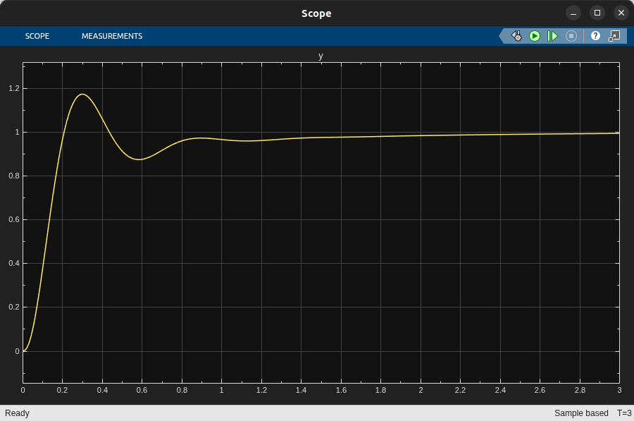
신호 기록과 Data Inspector
세 결과를 한 그래프에 겹쳐 보려면? Scope는 지금 돌린 결과만 보여 준다. 여러 번 돌린 결과를 겹치려면 신호를 기록해 두고 Simulation Data Inspector(줄여서 Data Inspector)에서 본다.

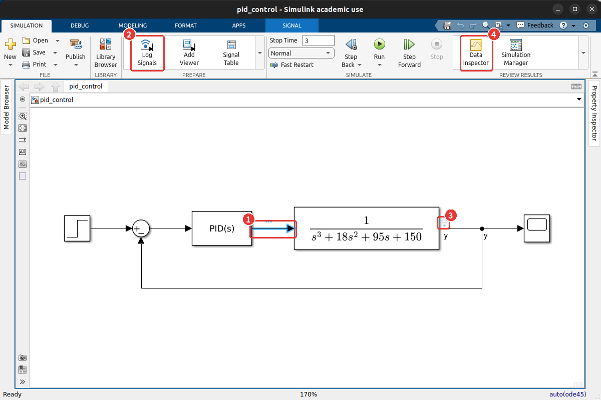
- 1기록할 선을 클릭해 고른다. 툴스트립에 SIGNAL 탭이 새로 생긴다.
- 2Log Signals를 누른다. 선을 오른쪽 클릭해 Log Selected Signals를 골라도 된다.
- 3안테나 표시가 붙은 선이 기록된다. 출력
y는 이미 기록 중이다. - 4Run을 누른 뒤 Data Inspector를 누르면 기록된 결과가 열린다.

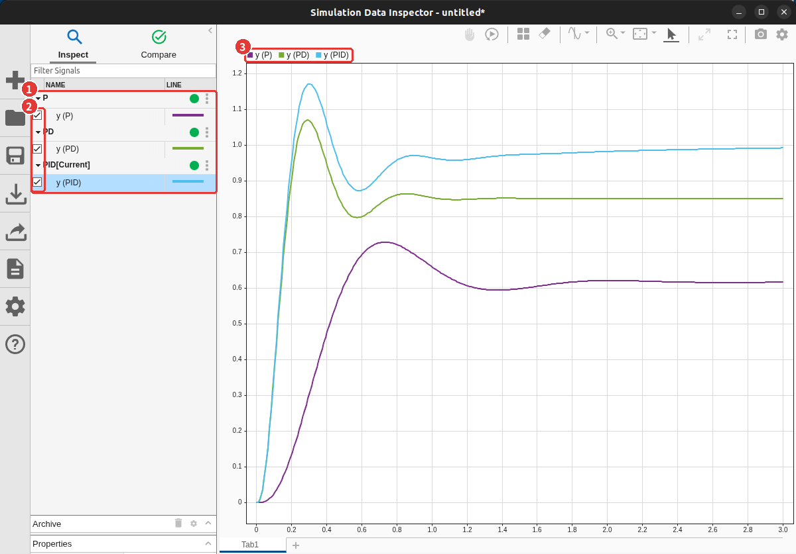
- 1실행 목록 — Run을 누를 때마다 「Run 1: pid_control」처럼 한 묶음이 생긴다. 이름을 더블클릭해 P · PD · PID처럼 바꿔 두면 나중에 알아보기 쉽다.
- 2체크 상자 — 체크한 신호가 오른쪽 그래프에 겹쳐 그려진다.
- 3범례 — 신호 이름도 바꿀 수 있다. 이 그림은
y (P)처럼 바꿔 두었다.
🆕 이 절에서 처음 나오는 것
- Log Signals · 안테나 표시
- 그 선의 값을 시뮬레이션 내내 저장한다. 코드에서는
out.logsout.getElement('y')로 꺼낸다(7회와 같은 방법). 여기서는 세 제어기의 출력을 모아 비교하는 데 썼다. - Simulation Data Inspector
- 기록된 신호를 실행별로 모아 보여 주는 창. 실행을 여러 번 하면 결과가 지워지지 않고 쌓인다. Compare 탭에서 두 실행의 차이를 그래프로 볼 수도 있다.
🧪 실습
빈 모델에서 PID 루프를 직접 만들고 이득을 바꿔 본다
이걸 해 보면 무엇을 알게 되나: 블록 찾기 → 놓기 → 잇기 → 설정 → 실행 → 결과 비교의 한 바퀴를 혼자 돌아 보고, 이득 하나를 바꿀 때 응답이 어느 쪽으로 움직이는지 손으로 확인한다.
- 시작 화면에서 Blank Model을 열고
my_pid.slx로 저장한다. (2분) - 빠른 삽입으로 Step · Sum · PID Controller · Transfer Fcn · Scope를 놓고 ⑦의 모양대로 잇는다. 되먹임 선은 출력선 위에서 시작한다. (10분)
- Step time을 0으로, Sum을
|+-로, Transfer Fcn 분모를[1 18 95 150]으로, PID의 P · I · D 칸을KpKiKd로 적는다. Model Settings에서 Stop Time 3, Max step size 0.01. (5분) - 명령 창에서
Kp = 960; Ki = 840; Kd = 120;을 실행하고 Run. Scope가 ⑦의 그림과 같은지 본다. (3분) - 출력선에 Log Signals를 걸고
Ki를 0, 400, 840, 2000으로 바꿔 가며 네 번 돌린다. Data Inspector에서 네 곡선을 겹친다. (10분)
이렇게 되면 성공이다: 4번의 Scope가 0.3초에 1.17 근처까지 솟았다가 1로 다가가고,
5번에서 Ki = 0인 곡선만 0.85 근처에 머물며 Ki가 클수록 1에 빨리 닿되 봉우리가 높아진다.
📝 연습문제
- ⑥의 P 제어 루프에서 Scope의 최종값이 0.9가 되게 하는 K를 \(K/(150 + K)\) 식으로 구하고, 그 K로 모델을 돌려 확인하라. 그 K는 안정한가? Scope의 모양은 어떤가?
- Step 블록의 Step time을 기본값 1로 둔 채 ⑤의 모델을 돌리면 Scope 그래프가 어떻게 달라지나? MATLAB의
step(G, 3)그래프와 나란히 놓고 차이를 설명하라.
✅ 점검
조금 더 알아두면
- PID Tuner. PID 블록의 Tune…을 누르면 루프를 선형화해 응답 그래프와 슬라이더(Response Time · Transient Behavior)를 보여 준다.
슬라이더를 움직이면 이득이 바로 바뀌고, Update Block을 누르면 블록에 들어간다. Simulink Control Design이 필요하다. 7회의
pidtune과 같은 계산이다. - Fast Restart. SIMULATION 탭의 Fast Restart를 켜면 모델을 한 번만 준비하고, 이득 같은 값만 바꿔 다시 돌릴 때 훨씬 빨라진다. ⑥처럼 같은 모델을 반복해 돌릴 때 쓸모 있다.
- 코드로 모델 만들기.
new_system·add_block·add_line으로 블록을 놓고 잇는 것도 코드로 할 수 있다. 같은 모양의 모델을 여러 개 만들 때 쓴다. 이 자료의 모델도 그렇게 만들었다. - Mux와 여러 신호. Scope 하나에 신호 여러 개를 그리려면 Scope 설정에서 입력 포트 수를 늘리거나, Signal Routing의 Mux 블록으로 신호를 묶어 넣는다.